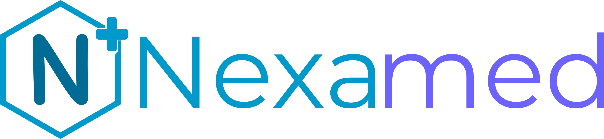

Quieres comprender mejor una consulta médica
Repasa conceptos y aclara dudas sobre lo que te explicarion en consulta.

Tu salud, mejor comprendida
Información médica clara y accesible para ayudarte a comprender mejor tu salud y tomar decisiones informadas.

Aprende sobre enfermedades, prevención y hábitos saludables.
Comprende los términos médicos con explicaciones sencillas.
Explora recursos interactivos para conocer mejor tu salud.
Profundiza en el cuidado de tu salud con contenido estructurado.
Aprende el signifcado de algunos térmicos médicos de forma sencilla y clara
Un espacio para comprender mejor tu salud, resolver dudas y tomar decisiones informadas.
Repasa conceptos y aclara dudas sobre lo que te explicarion en consulta.
Aprende qué significan sus resultados y por qué deben interpretarse según tu contexto clínico.
Encuentra explicaciones compresibles sobre enfermedades, síntomas y tratamientos.
Aprende sobre prevención y hábitos saludables que puedes incorporar a tu vida